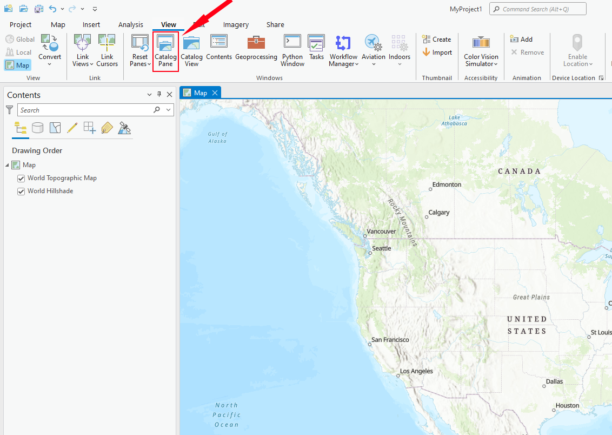

Geographic Information Systems, or GIS for short, are data structures
that analyze and display geographicly referenced information. They use data
attatched to unique locations to display relationships between spaces. GIS has many aplications,
especially in earth sciences and biology. Popular programs like Esri's ArcMap/ArcGIS Pro are programs that do not
require coding experience and help bridge the gap between earth sciences and computer science.
Source: USGS.gov
GIS technology is often used to conduct scientific investigations, manage resources, as well as aid in development planning. According to National Geographic; many retail businesses will use GIS software to help them determine where to locate a new store. Marketing companies will use GIS to decide to whom to market stores and resturaunts , as well as where that marketing should be.
If you need help installing ArcGIS Pro, or use with Esri Products follow the link Here for an installation tutorial and trouble shooting tips. (You can also navigate there from the navigation pane on our site.)
When opening ArcGis Pro you will be prompted with a Project Layout Pane that displays any projects you’ve already created and the option to start new projects. Select the MAP option to start a new project.
Once selected you may name the project and choose a relevant file location.
After "Creating a new Project" as shown in the “ArcPro Usage section, you will need to set up your workspace.
